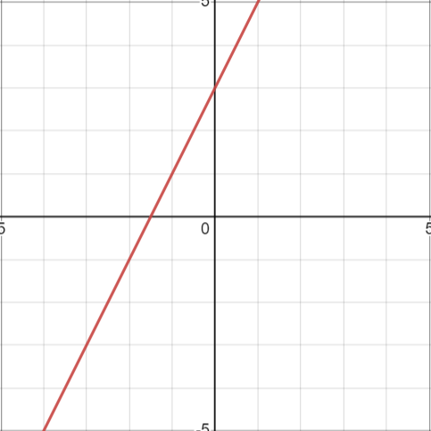

6) If 10 + x is 5 more than 10, what is the value of x?
7) What is the slope of a line that passes through the points (-1 , 1/3) and (0 , - 1/3) in the xy-plane?
8) Mary and Percy are both short story writers. Last year, they wrote a total of 21 short stories, and Percy wrote 3 fewer stories than Mary did. Which of the following systems of equations could be used to determine m, the number of short stories Mary wrote last year, and p, the number of short stories Percy wrote last year?
9) Luis and Kelly have a total of 32 dollars. If Luis has dollars and Kelly has y dollars, which of the following equations best models this relationship?
10) Which of the following is the closest to the x-intercept of this line?